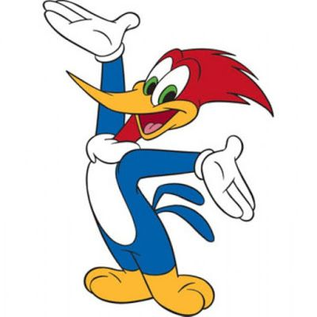
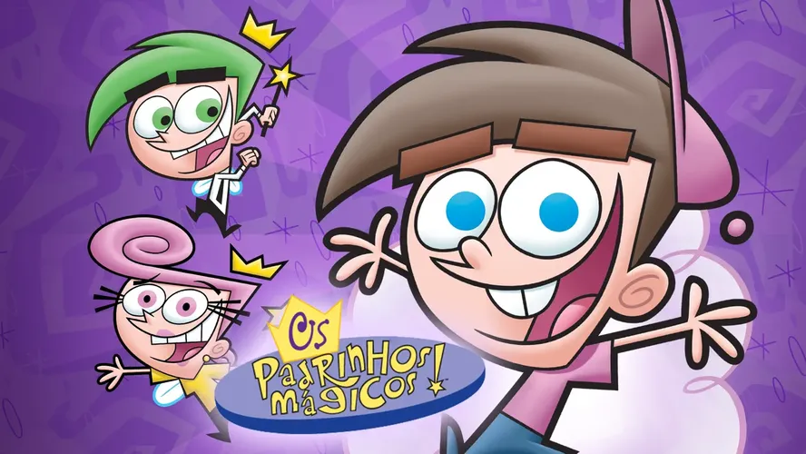

Programas dos anos 2000

Pica Pau
O programa gira em torno do Pica-pau (Woody Woodpecker, no original) ,é um pássaro maluco que vive se metendo em confusões e vivendo aventuras , com seus diversos amigos e inimigos .

Padrinhos magicos
Timmy Turner é um menino de 10 anos que só quer ter a vida perfeita . Mas seus pais trabalham o dia inteiro e ele é maltratado pela babá. Até que, um dia, ele recebe a visita de dois Padrinhos Mágicos, o divertido Cosmo e a responsável Wanda, que passam a ser seus companheiros inseparáveis.